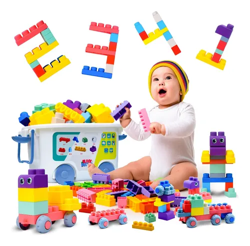
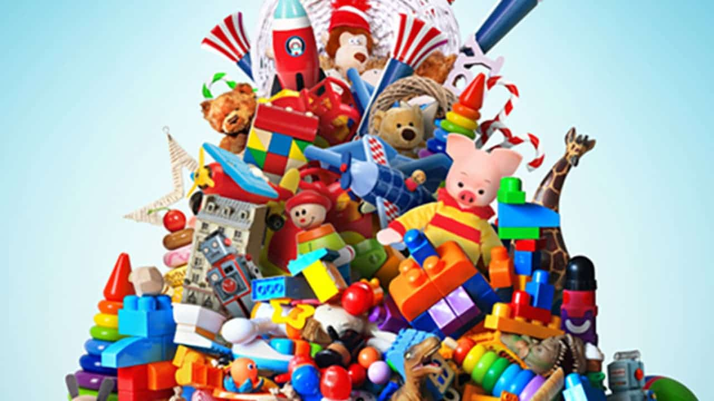
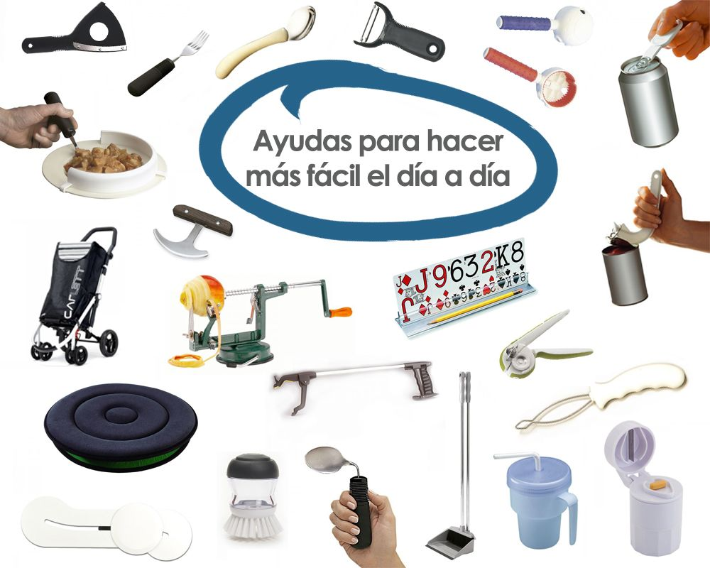

En Re-Toy-Make, creemos que el juego es vital para el bienestar, sin importar la edad o la especie. Encuentra juguetes innovadores y utensilios esenciales para mantener a tus mascotas activas y a las personas mayores mentalmente ágiles.


Para Perros - Juguetes
Ideal para perros con mandíbulas fuertes. Estimula el juego activo y la salud dental.
Para Personas Mayores - Cognitivo
Ayuda a mantener la agudeza mental y mejora la memoria con desafíos progresivos.
Para Gatos - Estimulación
Movimientos impredecibles que despiertan el instinto cazador de tu felino.
Utensilios - Asistencia
Facilita el agarre de objetos pequeños para personas con movilidad reducida.
Bienestar Animal | 10 Nov, 2024
Descubre cómo adaptar las rutinas de juego para mantener a tu perro mayor feliz y saludable.
Salud y Bienestar | 05 Nov, 2024
Explora los beneficios de los juegos cognitivos y sensoriales para el envejecimiento activo.
Creatividad y Mascotas | 28 Oct, 2024
Aprende a crear juguetes estimulantes para tu gato con materiales reciclados en casa.

Asistencia y Cuidado | 15 Oct, 2024
Conoce las herramientas que facilitan las tareas cotidianas y mejoran la independencia.
Suscríbete para enterarte de nuevos productos y guías exclusivas.